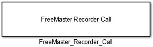
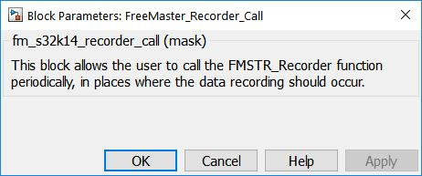

FreeMaster Recorder Call Block
This block allows the user to call the FMSTR_Recorder function periodically, in places where the data recording should occur when the FreeMASTER Recorder is used in the application. A typical place to call the recorder routine is at a timer or PWM interrupt, but it can be called anywhere, where you want the variable values to be sampled.
Block Image
Inputs:
- None
Outputs:
- None
Parameters and Dialog Box
Block Dependency
Please do the following:
- Use FreeMaster_Config block to configure FreeMaster embedded-side software driver.
Block Miscellaneous Details
- None